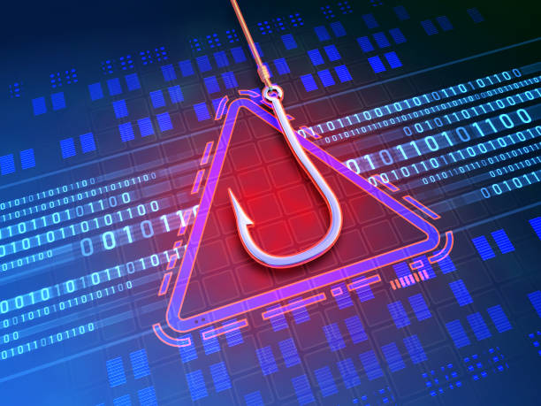

Tabla de Contenido
Como Proteger tu red domestica Cómo elegir un software antivirus adecuado Soluciones para evitar ataques de phishing Cómo identificar correos fraudulentos y soluciones para evitar ataques de phishing Políticas de ciberseguridad para pequeñas empresas Creación de políticas de uso de dispositivos personales (BYOD) Implementación de protocolos de respuesta a incidentesComo Proteger tu red domestica
Con la creciente cantidad de dispositivos conectados en el hogar, desde teléfonos inteligentes hasta electrodomésticos inteligentes, es fundamental garantizar la seguridad de tu red doméstica para evitar intrusiones o ataques cibernéticos. A continuación, te ofrecemos una serie de pasos prácticos y efectivos para proteger tu red Wi-Fi y mantener tus dispositivos a salvo.
-
Configurar una contraseña robusta para tu router
Cambia la contraseña predeterminada de tu router por una contraseña fuerte que incluya una combinación de letras mayúsculas y minúsculas, números y símbolos. Las contraseñas predeterminadas suelen ser vulnerables a los ataques, ya que pueden encontrarse fácilmente en internet.
-
Actualizar el firmware del router regularmente
Asegúrate de que tu router esté siempre actualizado con el firmware más reciente. Los fabricantes suelen liberar actualizaciones que corrigen fallas de seguridad, por lo que mantener el router al día es una capa adicional de protección contra amenazas.
-
Configurar una red de invitados
Habilita una red separada para los visitantes que accedan a tu Wi-Fi. Esto evita que tengan acceso a los dispositivos conectados a tu red principal y limita el riesgo de comprometer la seguridad de tu red a través de dispositivos de terceros.
-
Desactivar el WPS (Wi-Fi Protected Setup)
El WPS, si bien facilita la conexión a la red, también es un punto vulnerable que los atacantes pueden explotar. Desactivar esta opción mejora la seguridad general de tu red.
-
Cifrar tu red inalámbrica con WPA3
Si tu router lo permite, configura tu red para utilizar el protocolo WPA3, que ofrece el cifrado más seguro. Si no es compatible, asegúrate de utilizar al menos WPA2, que sigue siendo una opción aceptable.
-
Monitorear dispositivos conectados
Revisa regularmente la lista de dispositivos conectados a tu red para asegurarte de que todos sean dispositivos conocidos. Si detectas algún dispositivo sospechoso, puedes bloquearlo desde la configuración del router.
-
Desactivar la administración remota del router
A menos que sea absolutamente necesario, desactiva la opción de administrar tu router de manera remota. Esto previene que atacantes puedan acceder a la configuración de tu red desde fuera de tu hogar.

Cómo elegir un software antivirus adecuado
Con el aumento de amenazas cibernéticas, un buen software antivirus es una parte esencial de la seguridad de tus dispositivos. No todos los antivirus son iguales, por lo que es importante saber qué características considerar al elegir el más adecuado para tus necesidades. A continuación, te ofrecemos una guía sobre qué aspectos tener en cuenta para tomar una decisión informada.
-
Analiza tus necesidades y presupuesto
Decide si necesitas un antivirus gratuito o estás dispuesto a pagar por características adicionales. Los antivirus gratuitos ofrecen protección básica, mientras que los pagos incluyen funciones avanzadas como protección contra ransomware, gestión de contraseñas y soporte técnico.
-
Verifica la tasa de detección de malware
Investiga las pruebas independientes de detección de malware de laboratorios como AV-Comparatives o AV-Test. Un buen antivirus debe tener una alta tasa de detección de amenazas, identificando y eliminando tanto virus conocidos como amenazas emergentes.
-
Compatibilidad con tu sistema operativo
Asegúrate de que el software antivirus sea compatible con el sistema operativo que utilizas, ya sea Windows, macOS, Android o iOS. Algunos antivirus ofrecen mejor rendimiento en ciertos sistemas, por lo que es importante verificarlo antes de instalar.
-
Considera el impacto en el rendimiento del dispositivo
Un buen antivirus debe ser eficaz sin ralentizar tu sistema. Lee reseñas o pruebas de rendimiento para asegurarte de que el software que elijas no consumirá demasiados recursos del sistema mientras lo protege.
-
Funciones adicionales de seguridad
Los antivirus más avanzados incluyen herramientas extra como un firewall integrado, protección para la navegación web, protección de banca en línea, VPN, y control parental. Evalúa si estas funciones son importantes para tu situación particular.
-
Frecuencia de actualizaciones
Un buen antivirus necesita ser actualizado frecuentemente para estar al día con las nuevas amenazas. Asegúrate de elegir uno que se actualice automáticamente de forma regular sin necesidad de intervención manual.
Soluciones para evitar ataques de phishing
El phishing es una de las amenazas cibernéticas más comunes y efectivas, donde los atacantes intentan engañarte para que reveles información personal, financiera o sensible. Estos ataques suelen ocurrir a través de correos electrónicos, mensajes de texto o sitios web falsos que parecen legítimos. Protegerte contra el phishing es esencial para mantener tus datos seguros, y aquí te ofrecemos varias soluciones para evitar ser víctima de este tipo de ataque.
Cómo identificar correos fraudulentos y soluciones para evitar ataques de phishing:
-
Verificar la dirección del remitente
Una de las señales más comunes de un ataque de phishing es una dirección de correo electrónico sospechosa. Aunque el nombre del remitente parezca legítimo, siempre revisa cuidadosamente la dirección de correo. Los correos fraudulentos suelen tener ligeras modificaciones en el dominio, como "support@amozon.com" en lugar de "support@amazon.com".
-
Presta atención a los enlaces y archivos adjuntos
Nunca hagas clic en enlaces ni descargues archivos adjuntos en correos sospechosos. Antes de hacer clic en un enlace, pasa el cursor sobre él para ver la URL real a la que te llevará. Si no coincide con el sitio legítimo o parece extraño, evita hacer clic. Los archivos adjuntos, especialmente los .zip o .exe, también pueden contener malware.
-
Errores gramaticales y de ortografía
Los correos de phishing suelen tener errores de gramática o ortografía que no estarían presentes en comunicaciones oficiales de empresas legítimas. Lee con atención el contenido del correo y, si encuentras errores evidentes, es probable que se trate de un intento de phishing.
-
Solicitudes urgentes de información personal
Si recibes un correo que te presiona para que proporciones información personal o financiera de manera urgente, desconfía. Las empresas legítimas nunca te pedirán información sensible, como contraseñas o números de tarjetas de crédito, a través de correos electrónicos.
-
Herramientas de protección en el navegador
Utiliza herramientas de seguridad que ofrezcan protección contra phishing en el navegador, como bloqueadores de pop-ups y extensiones de seguridad que identifican sitios web maliciosos. Navegadores como Chrome, Firefox y Edge tienen funcionalidades integradas para advertir sobre sitios potencialmente peligrosos.
-
Autenticación de dos factores (2FA)
Habilitar la autenticación de dos factores en tus cuentas añade una capa adicional de seguridad. Incluso si los atacantes logran obtener tu nombre de usuario y contraseña a través de phishing, necesitarán un segundo factor de autenticación, como un código enviado a tu teléfono, para acceder a tu cuenta.
-
Mantén tu software actualizado
Asegúrate de que tu sistema operativo, navegador web y software de seguridad estén actualizados. Las actualizaciones incluyen parches de seguridad que corrigen vulnerabilidades que los atacantes podrían explotar en ataques de phishing.
-
Usa gestores de contraseñas
Los gestores de contraseñas pueden ayudarte a identificar sitios de phishing. Si ingresas a un sitio falso que se hace pasar por uno legítimo, el gestor de contraseñas no completará automáticamente los datos de inicio de sesión, ya que no coincidirá con la URL correcta.

Políticas de ciberseguridad para pequeñas empresas
La ciberseguridad no es solo un tema para grandes corporaciones; las pequeñas empresas también deben implementar políticas sólidas para protegerse contra amenazas. Con un enfoque en la prevención y respuesta, una política de ciberseguridad bien estructurada ayuda a mitigar los riesgos de ataques, proteger datos sensibles y minimizar los tiempos de inactividad en caso de incidentes. Aquí te presentamos dos pilares fundamentales que toda pequeña empresa debería considerar: las políticas de uso de dispositivos personales (BYOD) y la implementación de protocolos de respuesta a incidentes.
Creación de políticas de uso de dispositivos personales (BYOD)
El uso de dispositivos personales en el trabajo es cada vez más común, ya que mejora la flexibilidad y productividad de los empleados. Sin embargo, también introduce riesgos de seguridad que deben ser gestionados adecuadamente. Aquí te mostramos cómo desarrollar una política eficaz de BYOD (Bring Your Own Device):
-
Acceso controlado a la red corporativa
Define claramente qué dispositivos pueden acceder a la red corporativa y qué tipo de datos están autorizados a manejar. Los dispositivos personales que se conecten deben cumplir con ciertos estándares de seguridad, como la instalación de software antivirus y la encriptación de datos sensibles.
-
Cifrado y autenticación de acceso
Implementa cifrado en todos los dispositivos que accedan a la red empresarial, asegurándote de que los datos estén protegidos tanto en tránsito como en reposo. Además, exige la autenticación multifactor (MFA) para el acceso a aplicaciones y datos críticos, lo que agrega una capa adicional de seguridad.
-
Separación de datos personales y empresariales
Los dispositivos personales deben tener herramientas que separen claramente los datos personales de los datos corporativos. Esto se puede lograr mediante la creación de contenedores o espacios de trabajo virtuales donde los datos de la empresa estén protegidos y aislados de los archivos personales.
-
Actualizaciones y parches obligatorios
Los dispositivos BYOD deben estar actualizados con los últimos parches de seguridad y actualizaciones de software. Implementa un mecanismo para asegurarte de que los dispositivos que accedan a la red cumplan con estas normativas.
-
Política de borrado remoto
En caso de pérdida o robo de un dispositivo personal, implementa una política de borrado remoto para proteger los datos corporativos. Esto garantiza que la información sensible no caiga en manos equivocadas si el dispositivo es comprometido.
-
Educación y formación para empleados
Los empleados deben recibir formación sobre los riesgos asociados con el uso de dispositivos personales y la importancia de cumplir con las políticas de seguridad. Deben conocer los procedimientos correctos para conectarse a la red de forma segura y las consecuencias de no cumplir con las políticas de BYOD.
Implementación de protocolos de respuesta a incidentes
Las pequeñas empresas también deben estar preparadas para manejar incidentes de seguridad cibernética de manera rápida y eficaz. Aquí te mostramos los pasos clave para implementar un protocolo de respuesta a incidentes:
-
Identificación y clasificación de incidentes
Establece un proceso claro para identificar y clasificar los incidentes según su gravedad. Un incidente puede variar desde una posible violación de datos hasta un ataque de ransomware. Tener diferentes niveles de gravedad permite priorizar la respuesta adecuada.
-
Notificación y escalación
Define un protocolo para notificar a las partes interesadas en caso de un incidente. Establece quién debe ser informado, cómo y en qué plazo. Los empleados deben saber a quién acudir en caso de detectar actividades sospechosas. Para incidentes graves, debe haber un mecanismo de escalación que involucre a los niveles superiores de la organización.
-
Aislamiento y contención del incidente
Una vez que se detecta un incidente, es crucial aislar el sistema afectado para evitar que se propague a otros dispositivos o redes. Los equipos de respuesta deben tener acceso a herramientas que les permitan contener el daño de manera rápida y eficiente, como desconectar dispositivos de la red o desactivar cuentas comprometidas.
-
Análisis forense y recopilación de evidencias
Después de contener el incidente, realiza un análisis forense para determinar cómo ocurrió el ataque y qué datos fueron afectados. Este análisis también ayudará a identificar fallos de seguridad que deben corregirse. Asegúrate de conservar las evidencias en caso de que sea necesario reportarlas a las autoridades o utilizarlas en un proceso legal.
-
Recuperación y restauración
Una vez que el incidente ha sido contenido y se ha completado el análisis forense, el siguiente paso es restaurar los sistemas afectados. Esto puede implicar restaurar datos desde copias de seguridad, cambiar contraseñas y asegurar que los sistemas comprometidos sean revisados antes de ser reintegrados a la red.
-
Revisión post-incidente y mejoras en la seguridad
Después de resolver el incidente, realiza una revisión post-incidente para analizar lo sucedido y mejorar los procedimientos de seguridad. Las lecciones aprendidas pueden ayudar a reforzar las políticas y mejorar la capacitación de los empleados para evitar futuros incidentes.
-
Cumplimiento normativo y comunicación externa
Dependiendo de la naturaleza del incidente, puede ser necesario cumplir con ciertas normativas que exigen la notificación a autoridades o clientes sobre la violación de datos. Asegúrate de cumplir con las regulaciones locales e internacionales sobre la protección de datos y la ciberseguridad.